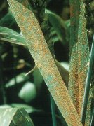

Búza levélrozsda (vörösrozsda)
Puccinia recondita
A rozsdagomba a talajon telel át téli spóra (teleutospóra) alakban.
tavasszal először a köztigazdát, a sóskaborbolyát fertőzi meg. A sóskaborbolyán
kifejlődő nyári spórák (uredospórák) fertőzik meg a búzát.
A fertőzés során a gabona bőrszövete (epidermisze) felszakad, túlzott párologtatás
lép föl, csökken az ezermagtömeg.
Védekezés:
- a köztigazda irtás
- gombaölő szerek (Tilt)